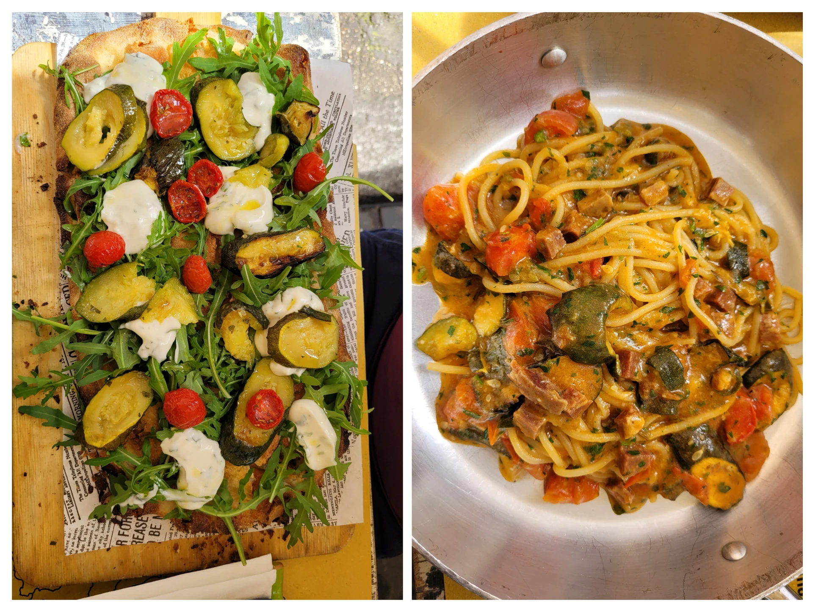
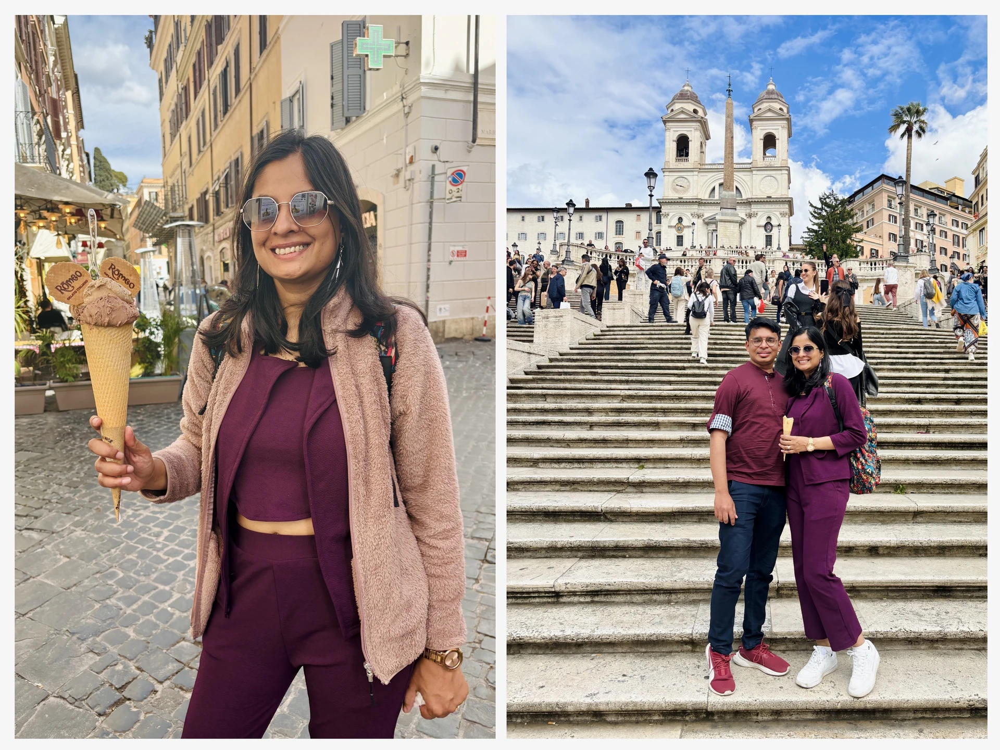
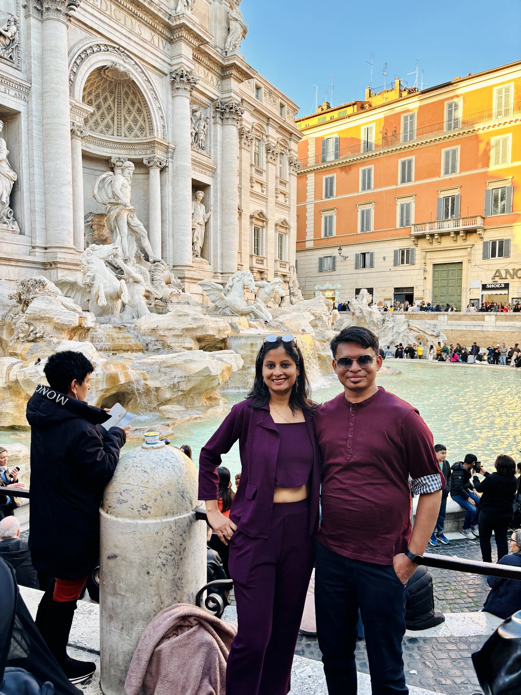
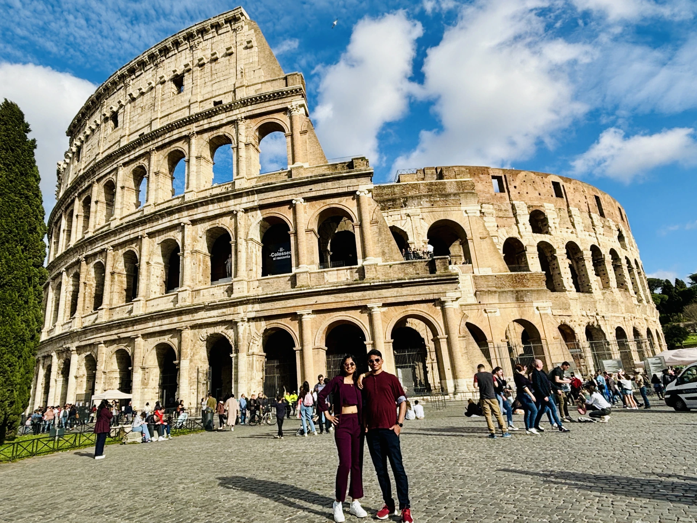
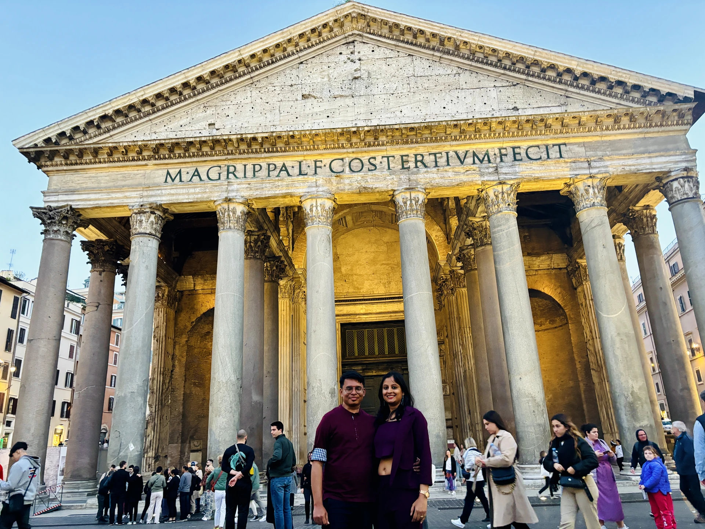
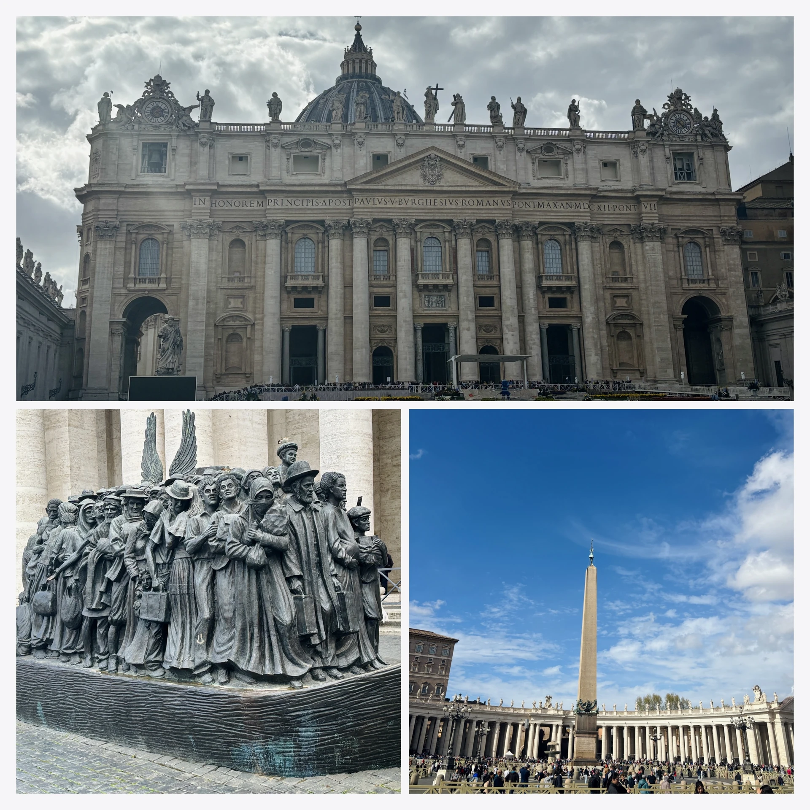
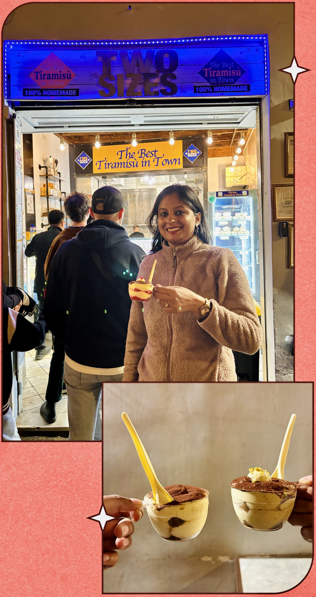

After wrapping up our Spain and Portugal adventures, I was buzzing with excitement for the Italian leg of our trip—and the final stretch of our European journey. I was hoping for better weather, some sunshine, and a whole lot of pasta.
We had our first internal flight in Europe on the morning of April 3rd—Barcelona to Rome at 7:15 AM. To make things easier, we stayed near the airport the night before. The plan was to catch the 4 AM bus; missing it would mean an expensive cab ride. Thankfully, the bus stop was right outside our hotel, and as soon as we reached it, the bus arrived. A good omen.
At the airport, we faced our first challenge: self-check-in for luggage. No staff at the counters, just machines. It made me wonder—why don’t we have this in India? Is it because labor is cheaper, or are we just not there yet in terms of tech adoption? Either way, it was a moment of reflection.
As always, Harshit and I had our little argument—our approaches to problem-solving are very different, and travel tends to bring that out. But we figured it out, checked in, and waited at the gate. I noticed groups of school students flying out on trips to other European countries. For them, it was just another school outing. For me, it was a reminder of how far I’ve come. My 18-year-old self would never have imagined standing in Rome at 30.
The flight was short—just two hours—and I slept through most of it. When we landed in Rome, I felt a wave of emotion. I’ve seen this city in so many films, romanticized and larger than life. And now, I was here.
Getting from the airport to the city was another debate—bus or train? We chose the bus. Harshit slept, but I stayed awake, watching the city roll by. The weather was perfect – sunny and breezy.
Our Airbnb host was late, so we waited outside until a delivery guy let us in. We dropped our bags in the hallway, got ready there, and stepped out to explore Rome with our 24 hour Roma Pass in hand.
And wow—Rome was crowded. Coming from India, I don’t expect European cities to feel packed, but Rome was an exception. It made me realize that population challenges aren’t unique to us. For the first time, we saw ticket inspectors on public transport, and I understood why—many people weren’t validating their tickets.
We kicked off our Roman adventure the way every proper Italian dream should—with pizza and pasta. And yes, the hype is real. The crust was crisp in all the right places, the sauce tasted like it had been kissed by summer tomatoes, and the pasta? Silky, savory, unapologetically indulgent. Italy doesn’t serve food—it serves emotion.

And then came our first gelato—Romeo Gelateria, tucked near the Spanish Steps, where we dipped into creamy magic that instantly became a non-negotiable addiction. From that moment onward, gelato became our official sidekick, appearing in side streets, after museum walks, or just because the sun decided to show up.
Rome started with carbs and cream. No better beginning.

Day 1
Roman Icons — Your Walk Through History (and Hilarity)
From coins in fountains to crumbling empires and cinematic gelato breaks, these were the stars of our Rome story:
Spanish Steps
- Misnamed elegance: Despite their name, they’re French-funded and not Spanish! They're named after the nearby Piazza di Spagna.
- Fashion & Film: The steps host glam shoots and once saw Audrey Hepburn sparkle in Roman Holiday.
- Sit at your own risk: Sitting is banned now to preserve the site. You can snap selfies, not snooze.
- Keats House: Just beside the steps sits the final residence of poet John Keats—now a museum of dreams and melancholia.
📝 When you climb these, you’re also climbing into a poem.
Trevi Fountain
- Three coins, three fates: Toss one to return to Rome, two to fall in love, and three to get married. At least that's what the legends say.
- Big charity splash: Over €1 million annually is collected from fountain coins and donated to those in need.
- Oceanus, not Neptune: That towering figure is actually Oceanus—the sea god in dramatic marble.
- Cinematic stunner: Featured in La Dolce Vita and The Lizzie McGuire Movie. One is culture, the other is... also culture.
📝 It's not just a fountain—it’s a wishing well with architectural abs.

Colosseum
- Rome’s ancient stadium: Built in 80 AD, it hosted gladiator combat, wild animal hunts, and the world’s bloodiest entertainment.
- Flooded for naval battles: Yep, they made it waterproof for showdowns on ships.
- The Hypogeum: A spooky underground maze where lions and warriors waited to be unleashed.
- Still standing tall: Despite earthquakes, fires, and tourists with broken phone hinges (looking at you, Harshit), it's the largest amphitheater ever built.
📝 The drama’s faded, but the echoes still thunder.

Pantheon
- The dome to end all domes: Still the largest unreinforced concrete dome on the planet. No steel. Just skill.
- Perfect proportions: It’s a giant sphere sliced in half—equal in height and diameter.
- Sky hole magic: The oculus lets in sunlight, rain, and occasional divine vibes.
- Resting legends: Raphael lies here, alongside Italy’s royal dignitaries.
📝 Even closed, it feels like it’s whispering secrets.

Vatican City
- Tiny but mighty: Just 44 hectares—smaller than many malls—but home to priceless art, power, and spiritual gravity.
- Michelangelo’s masterpiece: He painted the Sistine Chapel ceiling standing up, not lying down (thanks to Hollywood myth busting).
- World’s oldest post office: You can send a postcard that arrives faster than Roman buses.
- Art marathon: The Vatican Museums stretch over 9 miles. Wear good shoes and prepare to gasp often.
- No babies allowed: Vatican citizenship depends on your job. No births happen here—only positions filled.
📝 It’s more than the Pope—it’s a palace of world history packed into a postage stamp.

We ended our final Roman night the way only true Italy travelers do—one more pizza, and then the grand finale: Tiramisu at Two Sizes. We tried every flavor. We overcommitted. And not once did we regret it. Even now, I find myself craving those creamy spoonfuls like they're memories I want to taste again.

I'd planned to dedicate an entire post to Italian food—and honestly, I still might. But if there's one truth that echoed through every city, every café, and every plate… it's this: In Italy, food isn’t part of the story—it is the story.
That evening, we returned to our apartment early, prepping for a 6:30 a.m. train to Amalfi. Rome had been intense, beautiful, a little chaotic, and completely unforgettable. It left us full—not just with food, but with moments, laughter, and a kind of quiet gratitude that only travel knows how to serve.
Rome doesn’t whisper its history — it hands it to you on a paper plate, between a slice of pizza and a fountain that’s older than your country.
Must-Visit Places in ROME
If you ever find yourself in Rome, here are some incredible spots to explore:
- Colosseum: Step back in time at this ancient amphitheater.
- Vatican City: Visit St. Peter's Basilica and the Sistine Chapel.
- Trevi Fountain: Toss a coin and make a wish at this Baroque fountain.
- Pantheon: Marvel at this ancient Roman temple.
- Roman Forum: Explore the ruins of ancient Rome.
- Piazza Navona: Enjoy the lively atmosphere of this Baroque square.
- Spanish Steps: Climb these iconic steps.
- Villa Borghese: Relax in this beautiful public park.
Join the conversation
Have a question, a tip, or a memory from the same place? Drop a comment below — no signup needed.